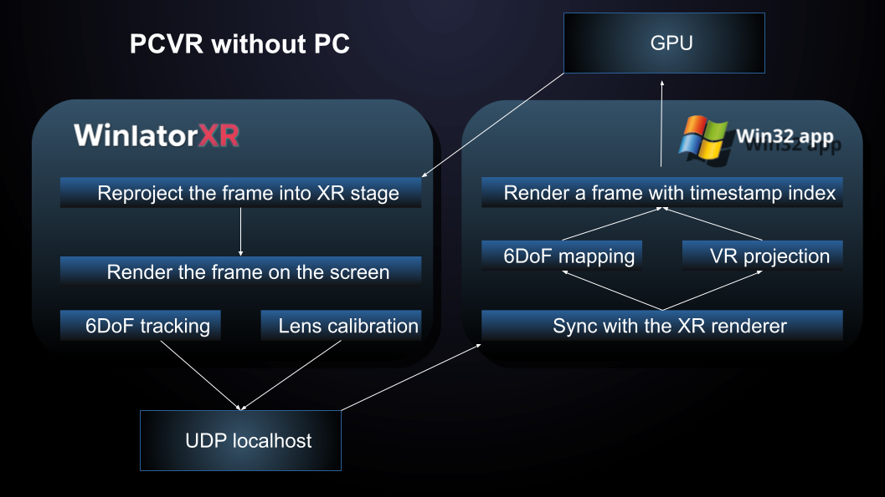

|  |
WinlatorXR's API provides 6DOF tracking data and controller inputs over UDP for use in games and mods within a container.
This is an experimental and evolving feature of WinlatorXR, and as such maintains various versions of the API for longterm compatibility.
|
The major difference between PCVR and WinlatorXR API
The Windows app/game has to sent data on localhost:7278 as string of float numbers separated by space:
| Field | Type | Description |
|---|---|---|
| L_HAPTICS | Float | Left controller vibration duration (frames) |
| R_HAPTICS | Float | Right controller vibration duration (frames) |
| MODE_VR | Integer | 1 = Enable VR, 0 = Disable |
| MODE_3D | Integer | 0 = No 3D, 1 = SBS, 2 = AER, -1 = User controlled |
| HMD_FOVX | Float | Custom horizontal FOV (degrees, if > 1) |
| HMD_FOVY | Float | Custom vertical FOV (degrees, if > 1) |
3D mode defines which method is going to be used to render stereoscopic frames
| 3D Mode | Description |
|---|---|
| Side-by-Side (SBS) | The left half of the rendered frame is displayed to the left eye, and the right half is displayed to the right eye. |
| Alternate Eye Rendering (AER) | Set the blue frame sync pixel to: 0 when rendering the left eye, 255 when rendering the right eye Rapidly alternating between left and right frames creates the stereoscopic 3D effect. |
| User controlled | User can select in XR settings whenever SBS or flat mode should be used. |
WinlatorXR provides data on localhost:7872 as string separated by space:
| Section | Fields | Description |
|---|---|---|
| Float Array |
Left Controller L_QX, L_QY, L_QZ, L_QW L_THUMBSTICK_X, L_THUMBSTICK_Y L_X, L_Y, L_Z Right Controller R_QX, R_QY, R_QZ, R_QW R_THUMBSTICK_X, R_THUMBSTICK_Y R_X, R_Y, R_Z Headset (HMD) HMD_QX, HMD_QY, HMD_QZ, HMD_QW HMD_X, HMD_Y, HMD_Z HMD_IPD, HMD_FOVX, HMD_FOVY, HMD_SYNC |
Space-separated float values representing full 6DOF tracking data. • QX/QY/QZ/QW = Quaternion rotation • X/Y/Z = Position in 3D space • THUMBSTICK_X/Y = Analog input values • HMD_IPD = Interpupillary distance • HMD_SYNC = Frame synchronization value |
| Boolean States |
Left Controller L_GRIP, L_MENU, L_THUMBSTICK_PRESS L_THUMBSTICK_LEFT, L_THUMBSTICK_RIGHT L_THUMBSTICK_UP, L_THUMBSTICK_DOWN L_TRIGGER, L_X, L_Y Right Controller R_A, R_B, R_GRIP R_THUMBSTICK_PRESS R_THUMBSTICK_LEFT, R_THUMBSTICK_RIGHT R_THUMBSTICK_UP, R_THUMBSTICK_DOWN R_TRIGGER |
Boolean string containing characters: T = TRUE F = FALSE Values are transmitted in the exact order shown. |
| Boolean States | Immersive, SBS |
Boolean string containing characters: T = TRUE F = FALSE Immersive – Fully immersive VR mode active SBS – Side-by-side rendering enabled |